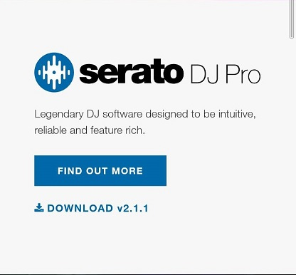

軟體介紹
要開始成為一個dj放歌，首先第一件事就是要下載放歌的軟體，那目前市面上最多人在使用的就是serato，大家可以直接去google搜尋就可以找到官網，那這個軟體目前是免費的，為什麼免費我們之後會再談到，那在下載的時候它會問你是使用什麼器材，如果有器材的人可以勾自己的器材，那如果沒有就勾沒有，接著呢就可以開始把你的歌拉進來啦！
Serato DJ



有了軟體之後接下來是最重要的也就是我們的歌，給許多想成為dj的朋友講一件非常重要的事，dj的歌建議一定要是高質量的，最少要有320kbps，那要去哪裡找這些可以載高質量的音樂網站呢，這裡推薦幾種方法給大家，首先，第一種，買音樂，買音樂是最快也最正確的方式去支持並且獲得高質量音樂的方法，有非常多地方都可以買到音樂，以下幾個推薦給大家。1.beatport 2.dj city 3.bpm supreme 4. Sptify 第二種 則是免費的音樂網站，那通常這種網站上的音樂會是比較地下的做曲者發行並且推廣他們音樂的地方，可以找到一些比較深比較少人聽過的歌，這類的網站通常會需要你提供一些貢獻，像是按讚、追蹤他們帳號、提供email網址等等，不過如果你喜歡他們的音樂，而且能夠免費獲得，按個讚並提供一些個人資訊應該是很合理的吧，這類的網站有1. ArtistUnion 2. Soundcloud